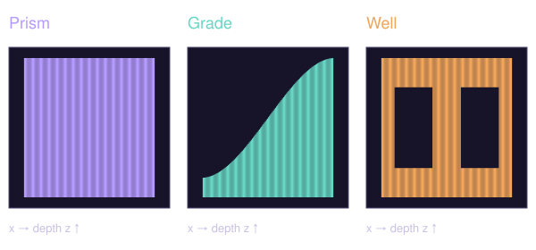

Forming field
The field could not be formed in this browser.
The shadow exhibit needs a canvas to draw the three occupancy solids.Same projection. Different bodies.
Canonical occupancy
Locked shadow lamina
Three different bodies are subsets of the same extruded cylinder S × ℝ. S is a rounded cross with a circular hub, defined by a shared signed-distance mask. Canonical projection is orthographic along −Z, up +Y. Occupancy of a pixel is the binary test that the ray through that pixel meets any occupied z-interval. By construction the three masks agree exactly on any raster of S. Prism and Well enclose the same outer surface. Their opaque exterior silhouettes coincide from every angle. The cut removes material on the positive-y side for inspection. Mask and volume refer to the uncut body. For all three cases together, the invariant applies only to that named projection. Paper and UV change presentation, not geometry. Not a manufacturable part. The field is a 64² column tessellation of those intervals, not a second geometry. Seams are the raster of S.
Imagine shining parallel light straight through the cross. A spot enters the shadow as soon as its ray hits any material. Twice the material along that ray still gives one occupied spot.
